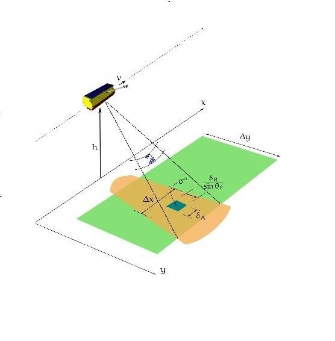
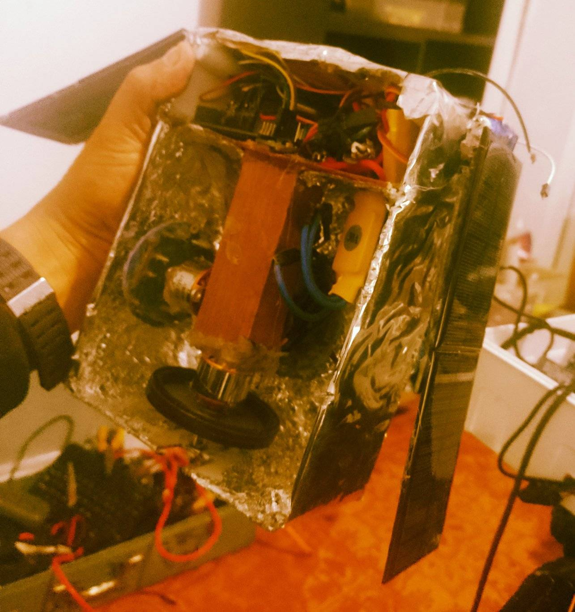
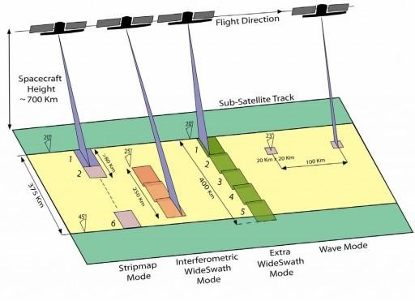
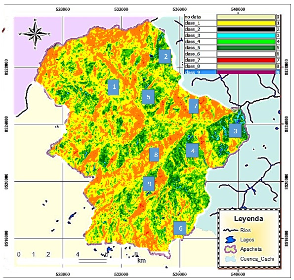
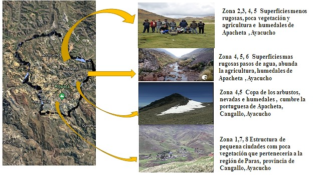
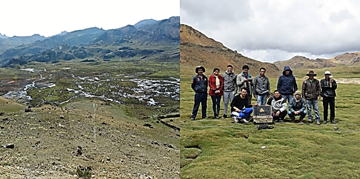

En el presente espacio les presentamos proyectos en temas de Teledetección desarrollada por nuestra empresa Villa Automation S.A.C
En Villa Automation SAC, desarrollamos proyectos de teledetección avanzada aplicando sensores remotos, visión por computadora e inteligencia artificial para la monitorización ambiental, agrícola y de defensa. Nuestras soluciones permiten capturar, procesar y analizar información geoespacial desde plataformas terrestres, aéreas (drones) y satelitales. Esto impulsa una toma de decisiones más precisa en sectores estratégicos como la agricultura inteligente, monitoreo de recursos naturales, control climático y vigilancia territorial.

Este trabajo se integra con nuestras líneas de automatización, robótica agrícola y tecnología aeroespacial, formando parte del ecosistema innovador de Villa Automation SAC.
El instrumento SAR se puede operar en cuatro modos diferentes figura 2.5 para satisfacer los requisitos de Copernicus para productos de datos con continuidad y requisitos de usuarios emergentes. Estos modos incluyen el modo de onda operacional y el modo interferómetro de barrido amplio que incluye un nuevo enfoque para los métodos de escaneo SAR conocido como observación del terreno con escaneo progresivo (Nagler et al, 2016). Los otros dos modos de escaneo son el escaneo de mapa de franjas y un modo de franja extra ancha. El método de exploración del modo de onda se caracteriza por una velocidad de datos baja, ya que muestra imágenes de 20 por 20 kilómetros a intervalos de 100 kilómetros a lo largo de la órbita de la nave espacial. Las imágenes tienen una resolución de alcance terrestre de 5 metros y una resolución de acimut de 20 metros. Para este método, el SAR se opera en ángulos de incidencia media de 23 a 37 grados (°) (Nagler et al, 2015).



Los resultados exhibidos en el capítulo anterior demuestran que el método de polarimétrica de Cloude-Pottier ha cumplido con los objetivos de la clasificación
de suelos en la Micro-Cuenca Apacheta, región Ayacucho, mediante el empleo de técnicas realizadas en el software SNAP 6.0. Se han usado la aplicación de estadística
descriptiva e inferencial para la presentación de la clasificación de suelos en la microcuenca Apacheta, mediante el uso de imágenes de radar Sentinel-1. Asimismo,
se aplican criterios de análisis de correlación para establecer la existencia de una relación entre los factores de regresión con el fin de describir las propiedades de las variables de investigación. Se logró determinar el grado aleatoriedad de los datos en imágenes de SAR Sentinel-1, correspondiente a los suelos de la microcuenca Apacheta, mediante la aplicación del parámetro de entropía y alpha polarimétrico, con productos SCL de las imágenes de radar Sentinel-1 obtenidas de la Agencia Espacial Europea (ESA), del año 2019, siendo lo más importante la identificación de datos expresada en números aleatorios en la escala de Z1 al Z9 que expresan las 9 zonas de Cloude –Pottier , donde la zona (Z1, Z4, Z5) representa el 72.838 % -82.305 % que luego representarán una extensión de 31.48 ha. de lagunas y zonas con agua 3679.92 ha. de vegetación, zona Z4 principalmente en pixeles encontrado (396172, 529847.09684 m2, 7652.98 ha). Estas estimaciones se realizaron utilizando el método de polarización Cloude_Pottier para clasificar de suelos en la subcuenca de Apacheta, región de Ayacucho. que permite obtener un banco de información que permite monitorizar la variación de humedales en los próximos años. Se logró determinación del mecanismo de dispersión de ondas de radar utilizando datos de productos SCL de las imágenes de radar Sentinel-1, del año 2019 solamente debido a su alta información y procesamiento que demanda mucho tiempo, correspondiente a los humedales de la microcuenca Apacheta, mediante la aplicación del parámetro alfa polarimétrico.
Se ha logrado correlacionar los parámetros de entropía y alfa polarimétricos para la aplicación del método de polarimetría Cloude_Pottier en una imagen de radar Sentinel 1 mediante salidas de campo y recopilación de imágenes (fotos, muestras, etc.).
Lee nuestra tesis sobre teledetección aquí:ARTICULOS Y LIBROS
👉 Leer Tesis completo aqui

Presupuesto de cohetes experimentales